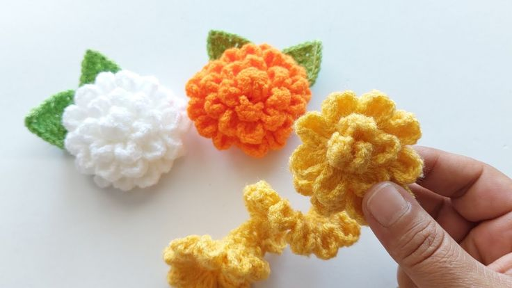
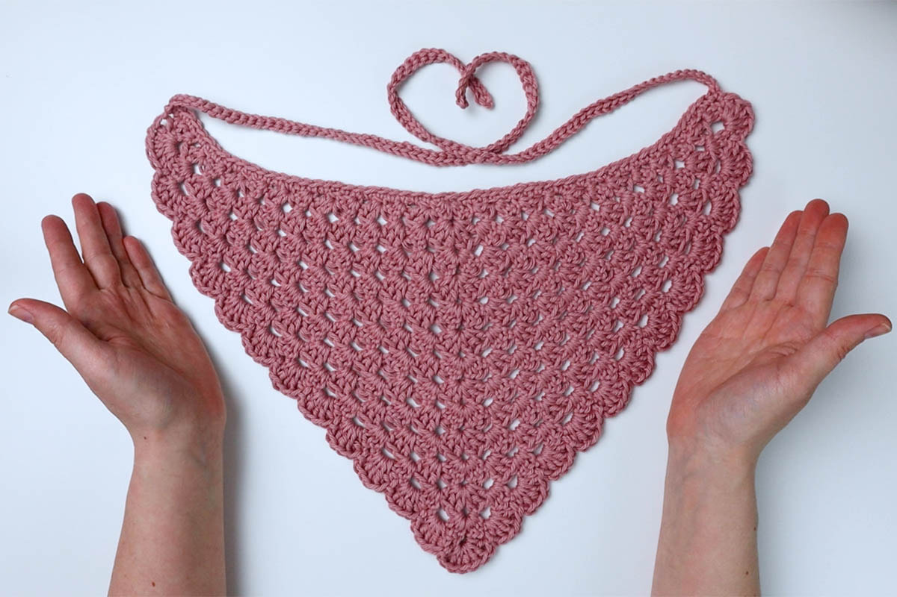
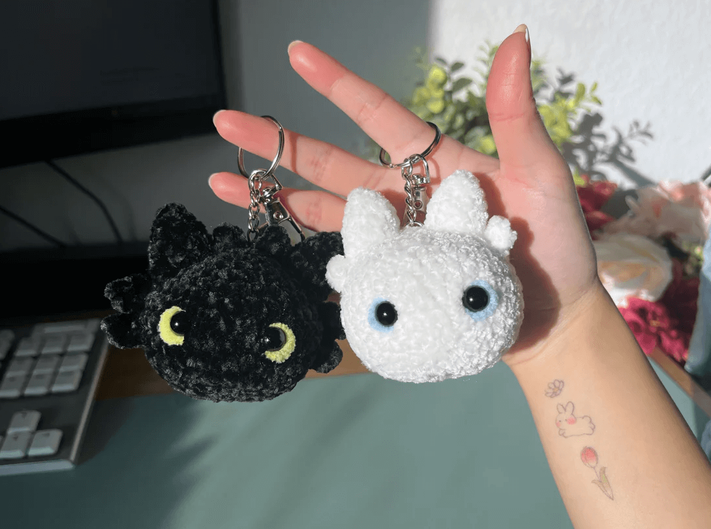

Hello everyone! My name is Corinne, and this is my crochet blog. I will be posting weekly updates with projects that I complete within the week. I hope you enjoy!
(Disclaimer: All of the images used are simply examples of what these projects look like. I do not have any current pictures of my own to show off.)
My most recent project was a marigold flower for my Fiance for Valentines Day. The marigold is the October birth month flower, and I wanted to make something special for him. It was a bit of a tedious project, but it was worth it to see the smile on his face.
My other project that I completed this week was a bandana. This is one of my most favorite creations, and I have made probably around 10 so far. It is such a simple pattern ,and I make these a lot when I don't feel like following along with any particular tutorial.
My most favorite project that I have worked on this week was a pair of keychains of Toothless and the Light Fury from the hit movie franchise How to Train Your Dragon. These were fun little projects to work on, and I have a feeling that if I were to start a booth at a market, these would do really well.
